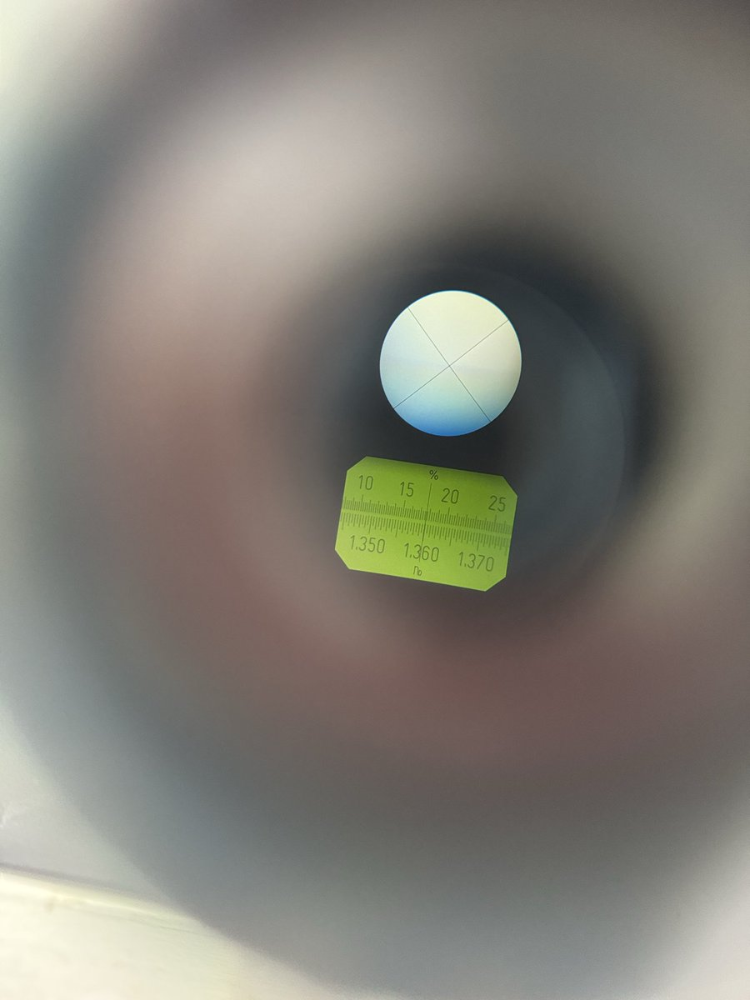

時璃風医詩🍥🌈
@hagishigure
@chenchen_suki 给宗门老祖拜三拜即可消除故障。

琛琛琛琛琛
@chenchen_suki
今天实验遇到的折光仪
怎么调都调不出黑白界面
调了好久隐约可见界面艰难测出了一组数据
最后做数据分析的时候我们和另一组的数据都不太好于是对调仪器再重做一组
然后发现他们的仪器界面特别特别好
他们做了没一会就去找老师“这一组仪器有问题啊”
感觉也是倒霉到一定程度了🤣 https://t.co/KoiCR4ChyZ